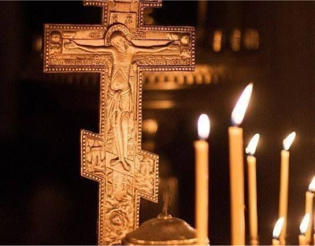
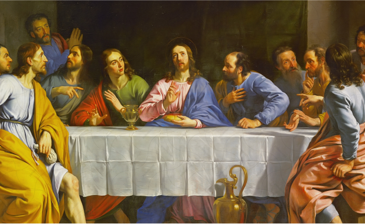
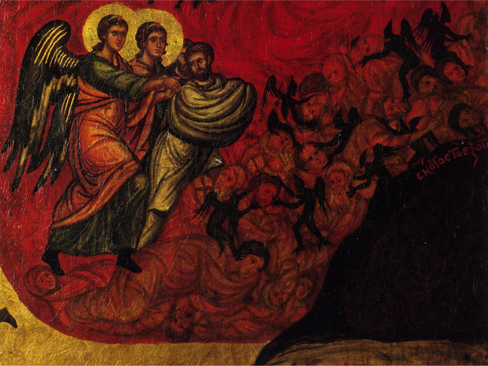

Упокоительная
Всякий страдалец имеет своё пристанище.
И живой,
и мёртвый.
Всякий грешник имеет право на исскупление.
И живой,
и мёртвый.
Всякая душа имеет право на упокой. Бессмертная.
Разве что не страдающая, грешная душа ньюфага и
ребёнка с фотиком.
Кринжовая.
Поставь свечку за упокой своей мамаши...

Галерея господня
Господь здесь, господь зрит, господь всё видит.
Господь рядом со всяким верующим.
Господь - опора всякого верующего.
Господь - отец всякого раба своего - человека.
Даже niggerа.
Специально для сомневающихся отпрысков.
Узри, пиздюк, доки на отца, как отец зрит
твои грехи и неверие!

Тронный зал
Место, где берёт истоки человеческая
жизнь, смерть и турниры Apex Legends.
Шанс встретить созидателя 100%
Шанс встретить созидателя в хорошем
настроении 3%
Шанс не отправиться в подвал после
встречи с созидателем 0%.
I do not wish to be horny anymore
I just wish to be happy.

Подвал
הבה נגילה,
הבה נגילה
הבה נגילה ונשמחה.
הבה נרננה
,הבה נרננה,
הבה נגילה ונשמחה.
עורו עורו אחים בלב שמח
עורו אחים בלב שמח
עורו אחים בלב שמח
עורו אחים בלב שמח.
עורו אחים בלב שמח.
עורו אחים
עורו אחים בלב שמח
